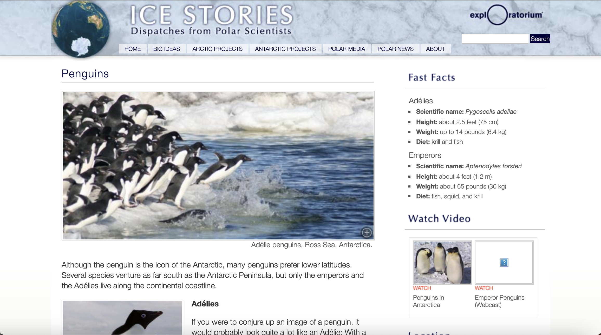

<!DOCTYPE html>
<html lang="en">
  <head>
    <meta name="viewport" content="width=device-width, initial-scale=1.0" />
    <title>Portfolio</title>
    <!-- import CSS styles -->
    <link rel="stylesheet" href="index.css" />
    <link rel="preconnect" href="https://fonts.googleapis.com" />
    <link rel="preconnect" href="https://fonts.gstatic.com" crossorigin />
    <link
      href="https://fonts.googleapis.com/css2?family=League+Spartan:wght@100..900&display=swap"
      rel="stylesheet"
    />
    <link
      href="https://fonts.googleapis.com/css2?family=Roboto:ital,wght@0,100;0,300;0,400;0,500;0,700;0,900;1,100;1,300;1,400;1,500;1,700;1,900&display=swap"
      rel="stylesheet"
    />
  </head>
</html>
<body>
  <!-- <div id="navigation-bar">
    <a href="#projects"><nav class="navigation-text">Projects</nav></a>
    <a href="#"><nav class="navigation-text">Resume</nav></a>
  </div> -->
  <div class="section">
    <div class="scroll-items">
      <h1>Iterative Design</h1>
      <p>
        Working with clients to redesign existing UI or develop new interfaces
        can be a challenging experience. The process requires lots of back and
        forth between the designers and the company and peers to identify the
        best potential design. Clients often have specific desires that don’t
        align with a developer's knowledge of good practice and each step of the
        design process reveals more flaws! This is the joy of iterative design.
      </p>
    </div>
  </div>
  <div class="section">
    <div class="scroll-items">
      <h2>A Client in Need</h2>
      <p>
        The startup
        <a href="http://warp.dev" style="color: rgb(2, 167, 167)">Warp</a> asked
        us to improve their terminal application’s onboarding experience. If you
        are unfamiliar with Warp, they created a terminal that incorporates AI
        and also allows for useful commands to be saved and shared easily. The
        onboarding experience spanned from downloading the app to completing the
        setup process. This experience was slightly overcomplicated and didn't
        actively try to hook the user in.
      </p>
    </div>
  </div>
  <div class="section" style="min-height: 550px">
    <div class="scroll-items">
      <h2>Sketches Galore!</h2>
      <p>
        Each member of our four-person team started by sketching out a couple
        different flows of the onboarding to better understand how the current
        experience could be improved.
      </p>
    </div>
    <div class="scroll-item">
      
    </div>
  </div>
  <div class="section">
    <div class="scroll-item">
      <p>
        From the ideas generated in our sketches, we created a basic wireframe
        to present to our clients at Warp, focusing on a few major changes:
        refining the sign-up process to make it a smoother first experience;
        maintaining the marketing survey in modals to place a distinction
        between the survey and the setup process; and adding more steps to the
        setup process to address current customer pain points Creating a simple
        walkthrough of Warp’s defining features to highlight what makes it
        special.
      </p>
    </div>
  </div>
  <div class="section">
    <div class="scroll-item">
      
    </div>
  </div>
  <div class="section">
    <div class="scroll-items">
      <h2>Iterating, iterating, iterating...</h2>
      <p>
        After creating this initial design, we went through a cycle of
        presenting our design, receiving critiques, improving the design, and
        presenting it once more. Our initial critique from our peers focused
        more on the consistency of the wireframe and amount of direction we
        needed to provide users. Our Warp client appreciated our additions,
        however, strongly suggested we place the market survey in the
        “blocklist” or terminal view.
      </p>
    </div>
  </div>
  <div class="section">
    <div class="scroll-item">
      <p>
        So back to the drawing board we went. While we personally did not agree
        with the decision to place the marketing survey in “blocklist” (and held
        numerous passionate discussions about it), we ultimately decided to
        respect the client’s request. Moving the marketing survey presented
        several visual and technical challenges. For example, with the modal
        view, it would be clear to both the user and to Warp when the user is
        complete with the survey. In the terminal, a user can always go back and
        change their responses. To resolve this, we proposed adding a submit
        button to clear the terminal and notify the user that they are done.
      </p>
    </div>
  </div>
  <div class="section">
    <div class="scroll-item">
      
    </div>
  </div>
  <div class="section">
    <div class="scroll-item">
      <p>
        Warp provided a relatively thorough brand manual, though it was targeted
        more towards their website rather than the terminal application. We
        attempted to mimic the general style of Warp's existing terminal.The
        typography matched the recommendations of the Warp brand manual, which
        were likely chosen due to their easy readability at different font sizes
        and styles.
      </p>
    </div>
  </div>
  <div class="section">
    <div class="scroll-item">
      
    </div>
  </div>
  <div class="section">
    <div class="scroll-item">
      <h2>A Success!</h2>
      <p>
        We held a meeting with two of the design leads at Warp, presenting our
        design and thoroughly explaining our choices. They were very excited
        with some of the alterations we made and looked forward to sharing our
        design for the marketing survey with their team to test if the change
        would be successful with users. They were particularly intrigued by our
        inclusion of a walkthrough to demonstrate their AI feature and the use
        of block popups to direct users as they addressed issues they hadn't
        considered. They appreciated our innovative and unique solutions and
        shared that we had sparked conversations that would lead to further
        development and iterations of the product.
      </p>
    </div>
  </div>
  <div class="section">
    <div class="scroll-item">
      
    </div>
  </div>
  <div class="section">
    <div class="scroll-item">
      <p>
        Ultimately, this iterative process proved successful and rewarding! The
        process of receiving feedback from different sources allowed us to
        understand the flaws in our manner of thinking and the assumptions we
        made about the users. As a group, we learned the challenge of
        communicating strong opinions about certain designs and finding a
        compromise that satisfied everyone.
      </p>
    </div>
  </div>
  <script src="script.js"></script>
</body>
